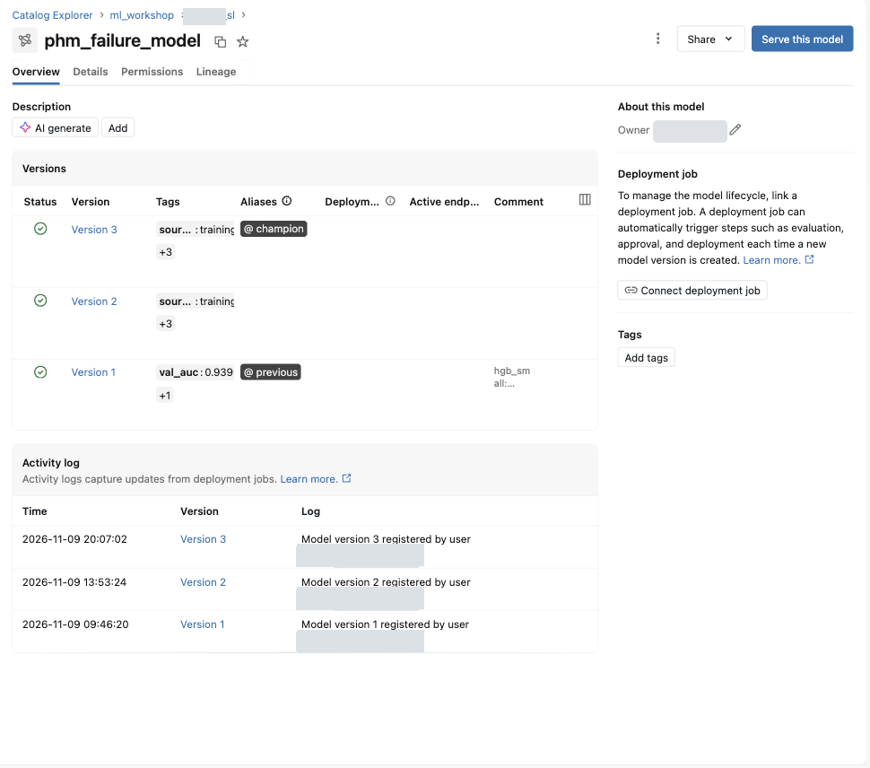

5) 성능 감시와 재학습¶
10월 2일(61일째)부터 공장에 신규 소재 lot LOT-N 이 들어왔습니다. 설비보전팀에서 "요즘 경보가 잘 안 맞는다"는 이야기가 나옵니다.
1단계 - 새로 들어온 데이터 확인¶
- 노트북을 열고 내 스키마를 입력합니다.
- 셀 5-1을 실행합니다. 주별 평균에서
LOT-N이후 베어링 온도와 모터 전류가 오른 것이 보입니다. - 고장 유형 비교 셀에서는 61~90일에 불균형(IMBALANCE) 고장 비중이 늘어난 것을 확인합니다.
2단계 - champion 성능 감시¶
- 셀 5-2를 실행합니다(약 1분). 결과가 확정된 구간마다 champion의 성능을 계산해
model_monitoring테이블에 기록합니다.
| window | auc | recall_at_p50 |
|---|---|---|
| 31~45일 (학습 구간) | 약 0.99 | 약 0.95 |
| 46~60일 | 약 0.94 | 약 0.70 |
| 61~75일 (LOT-N) | 약 0.79 | 약 0.05 |
| 76~90일 (LOT-N) | 약 0.79 | 약 0.16 |
왜 떨어졌나요?
- 신규 소재가 들어오면서 온도·전류 기준선이 바뀌었습니다.
- 불균형 고장의 전조도 진동보다 전류에 더 드러나게 됐습니다.
- 1~60일 데이터로만 배운 모델은 이 변화를 모릅니다. 그래서 같은 정밀도 기준(50%)으로는 고장 전 구간을 거의 잡지 못합니다(재현율 약 0.05).
표의 재현율 읽는 법
이 표의 recall_at_p50은 구간마다 정밀도 50%가 되는 문턱값을 다시 찾아 계산합니다. 모델에 저장된 경보 문턱값으로 실제 몇 번 경보했는지와는 다를 수 있으므로, 운영 감시에는 배포한 문턱값 기준의 경보 수·적중률도 함께 기록합니다.
운영에서의 감시
- Data quality monitoring의 data profiling(구 Lakehouse Monitoring)으로 입력 분포와 예측 드리프트를 자동으로 계산하고, 대시보드와 경보를 만들 수 있습니다. 진행자가 5.1 Data quality monitoring을 시연합니다.
- Model Serving의 요청·응답을 쌓는 추론 테이블(Unity Gateway)은 사설 엔드포인트로 보호된 스토리지에는 만들 수 없습니다. 내부망 구성에서는 아래 방법으로 감시 데이터를 남깁니다.
- 배치 예측 테이블 감시 (기본): 오늘 Step 4의
phm_predictions, 5.1의phm_inference_log처럼 예측 결과를 Delta 테이블에 쌓고 Data quality monitoring을 붙입니다. - 호출하는 쪽에서 기록: MES·엣지 게이트웨이가 요청과 판정 결과를 Delta 테이블에 적재합니다. 엣지는 현장에 모아 두었다가 연결될 때 올립니다.
- (검토 사항) 기본 스토리지(default storage) 카탈로그에는 추론 테이블을 만들 수 있습니다. 데이터가 Databricks가 관리하는 스토리지에 저장되므로, 데이터 소유·보안 요건과 맞는지 먼저 검토합니다.
- 배치 예측 테이블 감시 (기본): 오늘 Step 4의
Genie Code로 해 보기 · 성능 하락 원인
3단계 - 재학습¶
-
셀 5-3을 실행합니다. Step 3에서 만든 Job을
include_incoming = true로 다시 실행합니다(약 4분).- Jobs 화면에서 Run now ▾ → Run now with different parameters로 실행해도 같습니다.
-
출력에서 검증 결과를 확인합니다.
[validate] challenger v3 auc=0.848 vs champion v1 auc=0.790 -> PASSED
[promote] @champion: v1 -> v3 (@previous = v1)
4단계 - 결과 확인¶
-
셀 5-4에서
@champion이 바뀐 것과model_validation_log의 두 번째 행(passed = true)을 확인합니다.
화면의 개인 및 환경 식별 정보는 가렸습니다.
-
엣지 앱에서 @champion 내려받기 / 새 버전 확인을 누릅니다. 이벤트에
모델 업데이트: v1 → v3가 표시됩니다. -
시나리오에서 신규 소재 LOT-N 투입을 켠 뒤 시뮬레이션 (재)시작을 눌러 적용하고, 판정이 어떻게 달라지는지 봅니다.
엣지와 클라우드 값이 달라졌다면 정상입니다
엣지는 방금 바꾼 내 모델 v3로 판정하고, 비교 칸의 클라우드(Model Serving)는 진행팀 공용 모델의 고정 버전을 호출합니다. 운영에서는
@champion이 바뀔 때 엔드포인트도 그 버전으로 갱신하는 배포 단계를 둡니다(Step 3promote뒤 태스크 또는 3.2 deployment job).
한 바퀴 완료
데이터 → 학습 → 파이프라인 → 배포 → 감시 → 재학습 → 엣지 업데이트까지 MLOps 한 바퀴를 직접 돌렸습니다. 다음 6) 현업에 전달에서 결과를 대시보드와 Genie Agent로 넘깁니다.
운영에서는
- 재학습 Job에 정기 스케줄을 겁니다. Databricks는 정기 재학습부터 시작하기를 권장합니다.
- 새 데이터 테이블에 테이블 업데이트 트리거를 걸어, 데이터가 들어오면 자동으로 실행할 수도 있습니다.
- 문제가 생기면
@previous별칭으로 바로 되돌립니다. 별칭을 읽는 배치 추론은 다음 실행부터 바뀌고, 버전이 고정된 Serving 엔드포인트와 이미 내려받은 엣지 모델은 그 버전으로 다시 반영합니다.